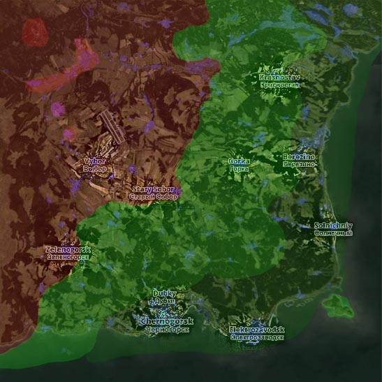

As you know Russias Chernarus has florished with these monsters we call zombies so i have created this website to help lead you in the right direction.

Your Journey
When you begin your journey on Chernarus you will appear on the shore either the North West, the South East or the South West for each of these locations you will need to avoid citys unless you need cetain supplies and take routs through small towns and huts slowly gearing up untill youve headed to North West Aifield which is above Vybor.
Once You have reached Nw Airfeild which is a tier 4 area you will find military grade everything from guns to gear and evern rations, this airfeild will be full of zombies and people but if stick your head down and dont get greedy your jorney will be worth while.